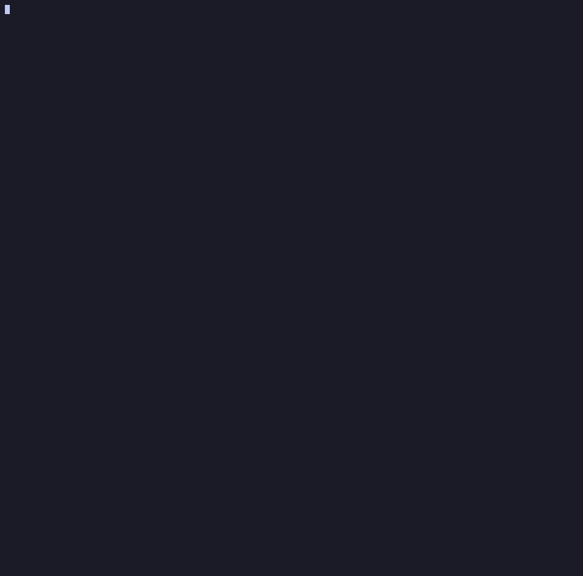

Audit every dependency.No build. No leaks.
A polyglot CVE · EOL · outdated · license scanner that reads your source tree directly — no mvn, no npm install, no Docker. Findings merged from CVEProject, OSV, NVD & retire.js, prioritised with EPSS + CISA KEV, an audit-ready HTML & Word report (plus CycloneDX SBOM & CSAF VEX), and an air-gapped mode for confidential code.
npm i -g fad-checker && fad -s ./your-project
⚠️ fad-checker is new and may still contain ( rare ) bugs. Treat its output as a strong first pass, double-check anything critical, and please report issues; they get fixed fast.

Ten ecosystems + vendored JS + embedded JARs + native binaries
Point it at any checkout — multi-module, monorepo, polyglot. It parses manifests and lockfiles directly, and falls back to best-effort (pinned versions) when there's no lockfile.
Built for audits, not just CI
No build, polyglot
Reads pom.xml, build.gradle & lockfiles across all ten ecosystems. No JDK, no install, no Docker — audit a checkout you can't even compile. It even cracks open committed .jar/.war/.ear binaries (fat-jars, shaded uber-jars) in-memory to scan the libraries shaded inside them.
Merged sources, fewer false positives
CVEProject + OSV.dev + NVD + retire.js, merged & deduped, then cross-checked against NVD CPE version ranges to filter noise.
Risk-based priority
Every CVE enriched with EPSS (FIRST.org exploit-prediction) and CISA KEV (known-exploited). A composite score puts exploited-in-the-wild first, not just the highest CVSS.
Beyond CVEs
Flags end-of-life (endoflife.date, with a Source column tracing each verdict to its mapping rule — plus an opt-in out-of-active-support level and a zero-false-positive PHP runtime verdict from the Composer constraint), deprecated / abandoned / yanked, outdated versions, and licenses (SPDX + copyleft policy) — signals most scanners skip.
Reports you can hand over
One self-contained HTML + Word-compatible .doc, organised by ecosystem and by the manifest that declares each dep, with per-tool fix recipes.
Exports & CI gating
Emit CycloneDX 1.6 SBOM, CSAF 2.0 VEX, flat JSON and SARIF 2.1.0 (GitHub/GitLab code scanning). Gate with --fail-on critical|kev or — for repeat audits — on new findings only with --baseline + --fail-on-new; triage false-positives via --ignore / --vex.
Air-gapped
Export an anonymized descriptor (public coordinates only), enrich online, report offline. The confidential codebase never leaves the enclave.
Extract & normalise the descriptors
-t <dir> writes a parallel tree of normalised dependency descriptors: each pom.xml reduced to the dependency-relevant nodes, reactor parents rewired to their real in-tree path, ${…} resolved in coordinates — plus every non-Maven lockfile/manifest mirrored (npm/yarn/pnpm, Composer, PyPI, NuGet, Go, Ruby). Online it also probes each coordinate and reports the ones absent from Maven Central — your private/internal modules — which -e <regex> then strips. Then it stops: a buildless, sanitised dependency inventory to archive, hand over, or feed to any scanner.
Native binaries, by checksum
Committed .dll/.exe/.so/.dylib (magic-byte confirmed — images/assets are never picked up) are identified by hash via deps.dev + CIRCL: flags tampered/unknown files and libraries that should be declared dependencies. No malware/AV lane.
Private registries & config files
Point it at private Nexus/Artifactory (Maven), Verdaccio/GitHub Packages (npm), devpi (PyPI), Gemfury (Ruby), GOPROXY (Go), Azure Artifacts/BaGet (NuGet) or Satis/Private Packagist (Composer) — tried first, public last, Basic or Bearer auth. Stash reusable defaults in .fad-env.json / --config or the FAD_CHECKER_ENV variable, and prune sub-paths with gitignore-style --exclude-path — every skipped directory is listed back in the report's Ignored directories appendix.
Unmanaged vendored JS, inventoried
Every standalone JS lib committed into the tree (jQuery, Bootstrap, PDF.js, …) that no package manager governs is inventoried — vulnerable or not (via retire.js --verbose). A cyber-hygiene constat on unknown-provenance third-party code, the JS twin of the native-binary scan.
Audit-grade & reproducible
Every report carries a provenance manifest (data-source freshness + run config) and a Methodology, data sources & limitations chapter that states what fad doesn't assess. Artifacts ship a SHA256SUMS integrity manifest (sha256sum -c). Differential audits diff a scan against a prior run (--baseline, or fad diff a.json b.json) so CI can fail on new findings only.
Certificates & keys
Finds committed X.509 certificates (flags expired, expiring, weak key RSA<2048, weak signature MD5/SHA1, self-signed), private & public keys — each labelled private (a leaked secret) or public — across PEM, OpenSSH every algorithm, PuTTY, PGP and one-line SSH (id_rsa, authorized_keys, known_hosts), plus JKS/PKCS#12 keystores. Parsed 100% offline with the built-in X.509 parser — no network.
Why use fad-checker for code audits?
What it does for an audit that the others don't. Same column set and sourcing discipline as COMPARISON.md — an amber cell is partial and says how, and every cell is meant to be checkable.
| What an auditor actually needs to do | fad-checker | OSV-Scanner | Trivy | Grype+Syft | OWASP DC | Snyk OSS |
|---|---|---|---|---|---|---|
| Audit a 100-module polyglot monorepo in one command, with no toolchain installed 1 | ✓ 105 modules | reactor skipped | needs ~/.m2 | opt-in | Java build | mvn build |
| Scan offline / air-gapped without dropping transitive deps 2 | ✓ 657/657 | ✗ | ~/.m2 | opt-in | mirror | ✗ |
| Identify the private/internal deps across a big project 3 | ✓ | ✗ | ✗ | ✗ | ✗ | ✗ |
| Extract cleaned deps descriptors into an external directory 4 | ✓ -t | ✗ | ✗ | ✗ | ✗ | ✗ |
| Report EOL / deprecated frameworks & deps, transitive ones included 5 | ✓ | deprecated only | OS distros only | ✗ | ✗ | web UI only |
| Report committed keys & certificates 6 | ✓ | ✗ | key rule | ✗ | ✗ | ✗ |
| Spot committed binaries (.dll, .exe, …) and check them against their checksums 7 | ✓ | ✗ | some | patterns | ✗ | ✗ |
| Clearly list what was not scanned — before the client asks 8 | ✓ ch. 0 + 6.3 | log | log | log | log | log |
| Answer “against what data?” six months later 9 | ✓ | ✗ | ✗ | DB date | NVD date | ✗ |
| Send a report, not a JSON dump 10 | ✓ HTML + .doc | HTML list | template | ✗ | HTML list | snyk-to-html |
| Charts, per-CVE drill-down and a pasteable Word copy 11 | ✓ | ✗ | ✗ | ✗ | ✗ | ✗ |
| Make delta reports showing only what changed 12 | ✓ --baseline | ✗ | ✗ | ✗ | ✗ | cloud |
- No mvn/go/npm/pip/dotnet — manifests parsed off disk, nothing installed or executed. 105 × pom.xml in one pass: 790 pairs vs OSV-Scanner's 657, 133 fad-only, versions mediated per module not flattened.
- 657 of 657 of OSV-Scanner's online Maven result, under unshare -rn — no network interface. Tripwire-tested; only public coordinates ever leave the enclave.
- Chapter 0 names every coordinate absent from the configured repositories, with the manifest(s) declaring it. -e <regex> then excludes them.
- -t <dir>: normalised POMs plus every non-Maven lockfile mirrored, private coordinates stripped. Archivable, and scannable by anything — --snyk included.
- endoflife.date, split direct vs transitive so you know which dep to bump, plus deprecated / abandoned / yanked and outdated. Trivy covers OS distros only; Snyk's package health is web-only.
- Inventory and verdicts: expiry, RSA<2048, MD5/SHA1, self-signed; private vs public keys; JKS/PKCS#12. Offline parser. Trivy's secret rule finds the file, not the flaw.
- Identified by hash via deps.dev + CIRCL → should-be-declared / name≠checksum / unknown / malicious. Syft's patterns name a version, not an identity.
- Chapter 0 flags what this scan couldn't reach (missing lockfiles, BOM-only versions, Yarn Berry, undeterminable PHP runtime); chapter 6.3 states what the tool never assesses. Elsewhere the first is a log line the audit never sees, the second isn't written down.
- Provenance manifest: tool, runtime, mode, run configuration and cache freshness for all 13 sources. Grype and Dependency-Check carry one source's date, not the run.
- Chapters 0→6 with an executive summary and fix recipes, self-contained HTML plus a Word .doc twin. None of the others emits Word.
- Four inline-SVG charts — CWE by worst severity, vulnerable transitives per root dep, direct vs transitive, fix-priority bands — rendered in the .doc too, with one-click copy as PNG (or a table as rich HTML) that pastes into Word formatted. Every CVE keeps its CVSS vector, CWE, references, CPE config and via-path behind a drill-down, with zero external assets.
- --baseline adds a Δ chapter (new / fixed / unchanged); --fail-on-new gates on new findings only. Snyk tracks this on its platform, not as a local diff.
Where it loses — containers/OS packages, auto-fix PRs, and CVE
coverage against Snyk's curated feed: the 118, explained.
Deliberately not a goal — reachability. A finding is a vulnerable version on the
dependency graph, and the report says exactly that (ch. 6.3) instead of guessing at call
paths. Whether the vulnerable code is reachable in this application is the auditor's
call, made with application context no scanner has.